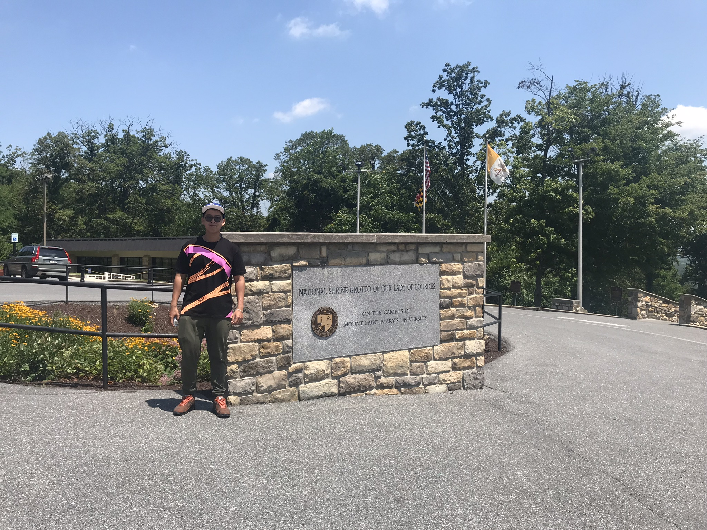

Amérique
Juillet 2019
Depuis longtemps, je ne rencontre pas ma tante, donc ma famille va au états-unis pour visite elle, et mes vacances en 2019 commence. ANA est la marque Japon que nous choisissons pour ce voyage. 22h au VietNam, nous partons à l'Aéroport international de Narita (Tokyo).
Après 23h d'aller, nous arrivons à l'aéroport international de Washington-Dulles (Washington, D.C).
États-Unis 
Washington, D.C
Maison-Blanche
La Maison-Blanche (The White House en anglais) est la résidence officielle et le bureau du président des États-Unis. Elle se situe au 1600, Pennsylvania Avenue NW à Washington. Le bâtiment en grès d’Aquia Creek et peint en blanc, construit entre 1792 et 1800, s'inspire du style georgien. Il est le lieu de résidence, de travail et de réception de tous les présidents américains depuis John Adams, deuxième président des États-Unis, qui y entre en 1800. Je visite un peu de Maison-Blanche, quelques chambres spécial, ce place est très limité pour les visiteur, il est très sécurité. (Bien sur, Le président d’États-Unis travaille ici).
Capitole des États-Unis
Le Capitole des États-Unis est le bâtiment qui sert de siège au Congrès, le pouvoir législatif des États-Unis. Il est situé dans la capitale fédérale, Washington, D.C. La construction de style néoclassique1 commence en 1793 et s'achève en 1812. Il est constitué d'un dôme et de deux ailes. L’aile nord est le siège du Sénat et l’aile sud est celle de la Chambre des représentants. Il est très grand, je pense qu'il est plus grand que Maison-Blanche. Avec le Capitole, on peut voir les peintures murales de l’artiste italo/grec-américain Constantino Brumidi (1805-1880) comptent parmi les œuvres les plus remarquables dans les couloirs du premier étage dans l’aile du Sénat. Ce lieu, connu sous le nom de Brumidi Corridors représente les grands moments et personnages de l’histoire américaine.(Ci-dessus - mon vidéo)
Mémorial de Lincoln
Le mémorial de Lincoln, en anglais Lincoln Memorial, est un monument construit en l'honneur d'Abraham Lincoln, 16e président des États-Unis, et inauguré en 1922 dans le West Potomac Park, dans le prolongement du National Mall à Washington. Grand bâtiment de marbre blanc en forme de temple dorique grec, il abrite une statue monumentale d'Abraham Lincoln assis et les inscriptions de deux de ses plus célèbres discours.
Mémorial de la Seconde Guerre mondiale
En face au Mémorial de Lincoln, C'est le Mémorial de la Seconde Guerre mondiale. Il est un bâtiment conçu par Leo A. Daly, dans le parc National Mall du centre-ville de Washington. Il a été officiellement inauguré le 29 mai 2004, en présence de milliers de vétérans.
New York
Times Square
Times Square est une intersection commerciale majeure, une destination touristique, un centre de divertissement et un quartier situé dans le quartier Midtown Manhattan de New York, à la jonction de Broadway et de Seventh Avenue. Il s’étend de l’Ouest de la 42ème à la 47ème rue. Brillamment orné de panneaux publicitaires et de publicités, Times Square est parfois appelé "Le carrefour du monde", "Le centre de l’Univers", "Le cœur de la Grande Voie Blanche", et "le coeur du monde". L'une des zones piétonnes les plus fréquentées au monde, c'est également la plaque tournante du quartier des théâtres de Broadway et un centre majeur de l'industrie du divertissement.
One World Trade Center
One World Trade Center (également connu sous le nom de One WTC ou Freedom Tower) est le bâtiment principal du complexe reconstruit du World Trade Center dans le Lower Manhattan, à New York. L'un des WTC est le plus haut bâtiment aux États-Unis et le sixième plus haut au monde. Le nouveau gratte-ciel se trouve à l'angle nord-ouest du site du World Trade Center, d'une superficie de 16 acres (6,5 ha), sur le site du 6 World Trade Center d'origine. Le bâtiment est délimité à l'ouest par West Street, au nord par Vesey Street, au sud par Fulton Street et à l'est par Washington Street.
La statue de la liberté
La statue de la liberté (Liberty éclairant le monde) (en anglais: The Statue of Liberty) est une sculpture néoclassique colossale située sur Liberty Island dans le port de New York à New York, aux États-Unis. La statue en cuivre, cadeau du peuple français au peuple américain, a été conçue par le sculpteur français Frédéric Auguste Bartholdi et sa structure en métal a été construite par Gustave Eiffel. La statue a été dédiée le 28 octobre 1886.
Le port de New York
Le port de New York, qui fait partie des ports de New York et du New Jersey, se trouve à l'embouchure de la rivière Hudson, où il se jette dans la baie de New York et dans l'océan Atlantique sur la côte est des États-Unis. C'est l'un des plus grands ports naturels du monde.
Maryland
La Grotte du Sanctuaire National de Notre-Dame de Lourdes
Le mont Sainte-Marie abrite la grotte du Sanctuaire National de Notre-Dame de Lourdes, lieu de pèlerinage catholique consacré à la Bienheureuse Vierge Marie, qui attire des milliers de visiteurs chaque année. La Grotte est "un lieu de beauté pastorale et d’inspiration spirituelle ... situé à flanc de montagne, où la nature s’exhibe dans toute sa splendeur sauvage et pittoresque". L'eau des grottes coule des robinets situés autour d'une fontaine, et des aumôniers sont disponibles pour bénir les visiteurs. Le père John Watterson fit construire la grotte de pierre en 1875 en tant que réplique de la miraculeuse Notre-Dame de Lourdes en France. Tout le monde a besoin de savoir que cet endroit est vraiment spécial. Beaucoup, beaucoup de guérisons ont eu lieu ici. Dieu veut atteindre ses enfants et il utilise la beauté de la grotte pour toucher la vie des gens. Indépendamment de vos croyances spirituelles, il vaut la peine de s’arrêter pour faire un tour sur la montagne et boire aux sources rafraîchissantes.
Canada
Niagara
Chutes du Niagara
Les chutes du Niagara ou chutes Niagara (toponyme officiel au Canada) (en anglais : Niagara Falls) sont un ensemble de trois chutes d’eau situées sur la rivière Niagara qui relie le lac Érié au lac Ontario, dans l’est de l’Amérique du Nord, à la frontière entre le Canada et les États-Unis : le « Fer à Cheval » (Horseshoe Falls) ou chutes canadiennes ; les « chutes américaines » (American Falls) ; le « voile de la mariée » (Bridal Veil Falls), d’une taille moindre. Bien qu’elles ne soient pas particulièrement hautes, les chutes du Niagara sont très larges. Avec un débit4 de plus de 2 800 m3/s, elles sont les chutes les plus puissantes d’Amérique du Nord et parmi les plus connues à travers le monde. Cette merveille naturelle, haut-lieu du tourisme depuis plus d’un siècle, est partagée par les villes jumelles de Niagara Falls (New York) aux États-Unis et Niagara Falls (Ontario) au Canada.
Toronto
La tour CN tower
La tour CN (en anglais CN Tower) est une tour de 553,33 mètres située dans le centre de Toronto, au Canada, qui est devenue l'emblème de cette ville. La tour est parfois appelée la tour du Canadien National, car la compagnie ferroviaire du Canadien National (CN) était propriétaire de la tour. Pendant 34 ans, la tour CN a été la plus haute tour du monde avant d'être dépassée en 2009 par la Burj Khalifa et la Tour de télévision et de tourisme de Canton. Elle reste à ce jour la plus haute tour de l'hémisphère occidental.
Toronto Harbour
Le port ou la baie de Toronto est une baie située sur la rive nord du lac Ontario, à Toronto, en Ontario, au Canada. C'est un port naturel protégé des vagues du lac Ontario par les îles de Toronto. Aujourd'hui, le port est principalement utilisé pour la navigation de plaisance, y compris les bateaux de plaisance et les bateaux de plaisance proposant des croisières panoramiques ou à la fête. Les ferrys partent des quais du continent jusqu'aux îles et les cargos livrent des granulats et du sucre brut aux industries situées dans le port. Historiquement, le port a été utilisé pour les navires militaires, le trafic passagers et le trafic fret. Les utilisations du secteur riverain comprennent les sites résidentiels, récréatifs, culturels, commerciaux et industriels.
Europe
Novembre 2015
France 
Novembre 2015, je participe un programme de change de lycéen avec lycée Saint-Just à Lyon pendant 2 semain. C'est première fois je vais en France.
Lyon
Lycée de Saint-Just
Le lycée de Saint-Just est un lycée public situé dans le quartier de Saint-Just, 5e arrondissement de Lyon (France). Il surplombe la ville à l'ouest de la Saône depuis la colline de Fourvière.
La Basilique Notre Dame de Fourvière
La basilique a été construite entre 1872 et 1884 par des fonds privés, à l'instar du Sacré Cœur de Montmartre à Paris. C'étaient tous deux des monuments triomphalistes pour remercier Dieu d'avoir vaincu les socialistes dans les fameuses «Communes» et ériger en symbole pour éradiquer les péchés de la France moderne. Abritant des mosaïques époustouflantes, de magnifiques vitraux et une crypte Saint-Joseph, la basilique de Fourvière est un lieu emblématique à visiter à Lyon. La vue depuis l'esplanade est à couper le souffle. Le complexe basilique s'étend à la chapelle Saint-Thomas, à la Vierge Marie, à l'esplanade panoramique susmentionnée, à la statue de l'archange Saint-Michel et au magnifique jardin du Rosaire.


Primatiale Saint-Jean de Lyon
La primatiale Saint-Jean-Baptiste-et-Saint-Étienne (dite aussi, plus simplement, cathédrale Saint-Jean) est le siège épiscopal de l'archidiocèse de Lyon. Elle a rang de cathédrale et de primatiale : l'archevêque de Lyon a le titre de Primat des Gaules Elle est située dans le cinquième arrondissement de Lyon, au cœur du quartier médiéval et Renaissance du Vieux Lyon, dont elle est un des éléments marquants. Au Moyen Âge, elle faisait partie d'un complexe d'églises et d'autres bâtiments ecclésiaux, le groupe cathédral, qui comprenait entre autres les églises Saint-Étienne et Sainte-Croix, détruites à la Révolution, ainsi que l'actuelle manécanterie.
Musée des Confluences
Le musée des Confluences est un musée d'histoire naturelle, d'anthropologie, des sociétés et des civilisations situé à Lyon en Auvergne-Rhône-Alpes. Héritier du Musée d'histoire naturelle Guimet de Lyon, il est hébergé dans un bâtiment de style déconstructiviste de l’agence d'architecture Coop Himmelb(l)au de 2014, dans le quartier de La Confluence, sur la pointe sud de la Presqu'île de Lyon, au confluent du Rhône et de la Saône (2e arrondissement de Lyon).
Les berges de Saône
Asie
Singapour
Septembre 2015 - Juin 2018 - Septembre 2018
Je vais au Singapour avec le but principal qui est faire le shopping. En parallèle, je visite la ville du Lion.
Merlion
Son nom combine "mer", qui signifie la mer, et "lion". Le corps de poisson représente l’origine de Singapour en tant que village de pêcheurs quand il s’appelait Temasek, qui signifie "ville de la mer" en javanais. La tête de lion représente le nom original de Singapour, Singapour, qui signifie "ville du Lion" ou "kota singa".
Gardens by the Bay
Gardens by the Bay is a nature park spanning 101 hectares (250 acres) of reclaimed land in the Central Region of Singapore, adjacent to the Marina Reservoir. The park consists of three waterfront gardens: Bay South Garden (in Marina South), Bay East Garden (in Marina East) and Bay Central Garden (in Downtown Core and Kallang). The largest of the gardens is Bay South Garden at 54 hectares (130 acres) designed by Grant Associates. Its Flower Dome is the largest glass greenhouse in the world.
Universal Studios Singapore
Universal Studios Singapore is a theme park located within Resorts World Sentosa on Sentosa Island, Singapore. It features 28 rides, shows, and attractions in seven themed zones.
Les quartiers/centres commerciaux de Singapour
Thaïlande
Septembre 2019
Bangkok
Wat Arun
Wat Arun Ratchawararam Ratchawaramahawihan (en thaï: อรุณ ราชวราราม ราชวรมหาวิหาร à propos de ce sonpronunciation (aide · info)) ou Wat Arun (en thaï: [wát ʔarun], "Temple of Dawn") est un temple bouddhiste (wat) dans le district de Bangkok Yai Bangkok, Thaïlande, sur la rive ouest de la rivière Chao Phraya, Thonburi. Le temple tire son nom du dieu hindou Aruna, souvent personnifié par les radiations du soleil levant. Wat Arun est l'un des sites les plus connus de la Thaïlande. La première lumière du matin se reflète sur la surface du temple avec une irisation nacrée. Bien que le temple existe depuis au moins le dix-septième siècle, ses prangs distinctifs ont été construits au début du dix-neuvième siècle sous le règne du roi Rama II.